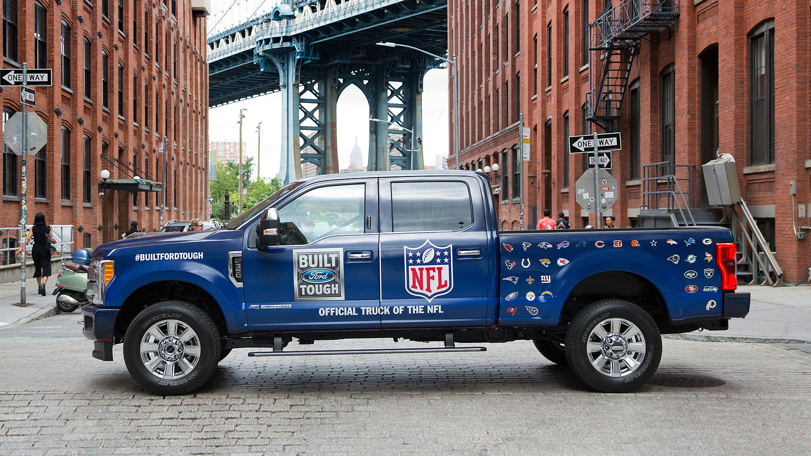

Danny seriously loves Japanese food so in the beginning of 2021, he decides to embark upon a risky
venture and opens up a cute little restaurant that sells his 3 favourite foods: sushi, curry and
ramen. Danny’s Diner is in need of assistance to help the restaurant stay afloat - the restaurant
has captured some very basic data from their few months of operation but have no idea how to use
their data to help them run the business. Danny wants to use the data to answer a few simple
questions about his customers: What are the key visiting patterns? How much money each customer
spent? Which menu items are their favourite per customer? Should we expand the existing customer
loyalty program? Come and see what Danny needs to do!

In this scenario, I assume the role of a Marketing Analyst at Maven Motors, an up and coming car
manufacturing company. Maven Motors is going to run a commercial during the Superbowl and my job is
to guide the creative content. Check out my recommendations.
Nuclear Reactors are mysterious, powerful, and feel slightly dangerous. I analyze the capacity for
many reactors across the US. For data preparing and processing, the data set was relatively clean,
but I had to convert this from wide to long data, split the locations, and convert the data type
from string to geolocation.
As the Marketing Data Analyst at Cyclistic, I am tasked to analyze 12 months of bike sharing data
from Chicago, IL to discern what kind of marketing strategies to implement to increase revenue.
However, we first need to better understand how annual memebrs and casual riders differ, and why
casual riders would buy a membership. I walk the six major phases of the data analysis process: ask,
prepare, process, analyze, share, and act. Check out the analysis and recommendations!